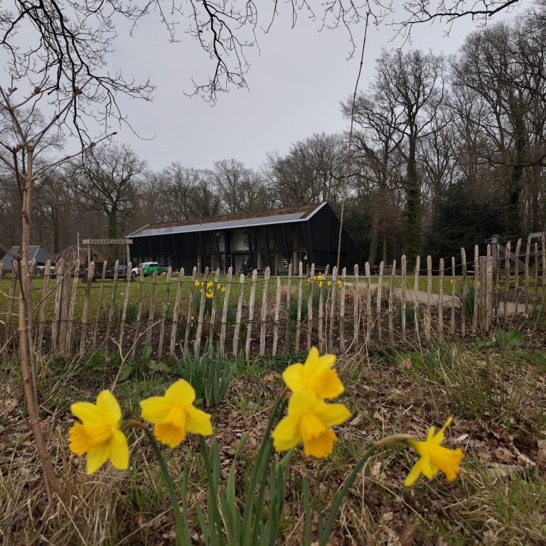

De tuinen van A. Vogel
Verscholen in de bossen van Landgoed Zwaluwenburg liggen de kleurrijke A.Vogel tuinen met vele kruiden en planten. Hier kan je een gezellig en gezond dagje uit plannen. Laat je zintuigen hier tot leven komen! De A.Vogel tuinen is dé plek voor een dagje uit op de Veluwe. Ervaar zelf de pure plantkracht!
Er zit veel kracht in de natuur. Bij A. vogel geloven ze dan ook dat veel van wat we kunnen gebruiken in de natuur te vinden is. Zo hebben planten werkstoffen om onze gezondheid te versterken. Deze kracht wordt er dan ook met liefde uitgehaald door A. Vogel. In hun tuinen oogsten ze dan ook jaarlijks 50.000 kg planten, zonder kunstmest en chemische bestrijdingsmiddelen. Die dan vers verwerkt worden in veel van hun producten.